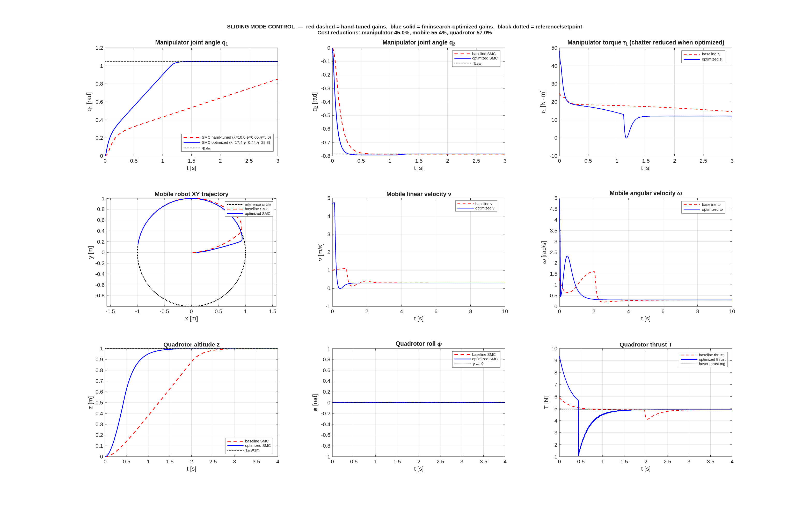
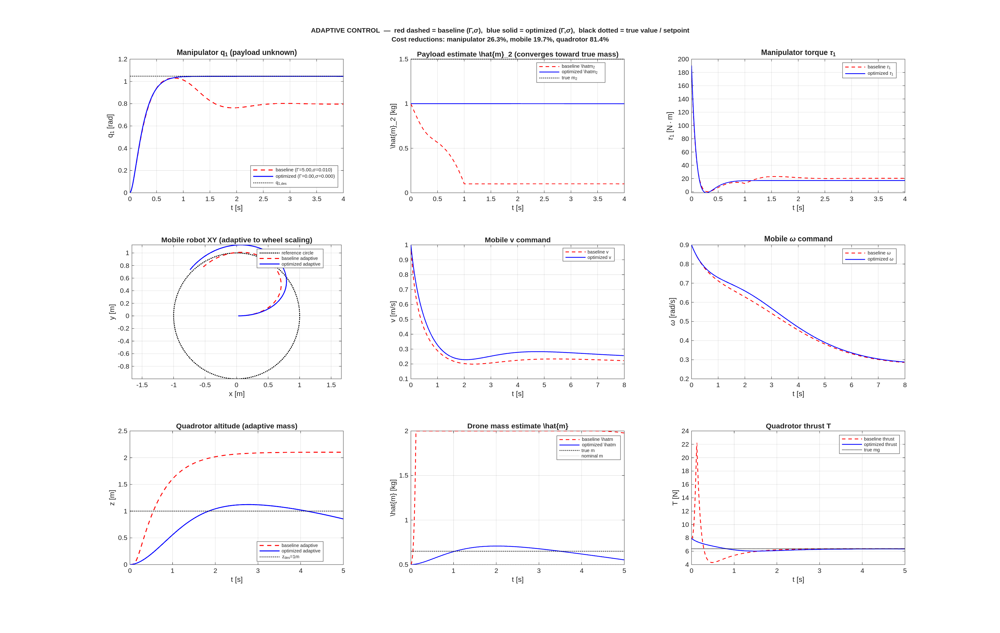
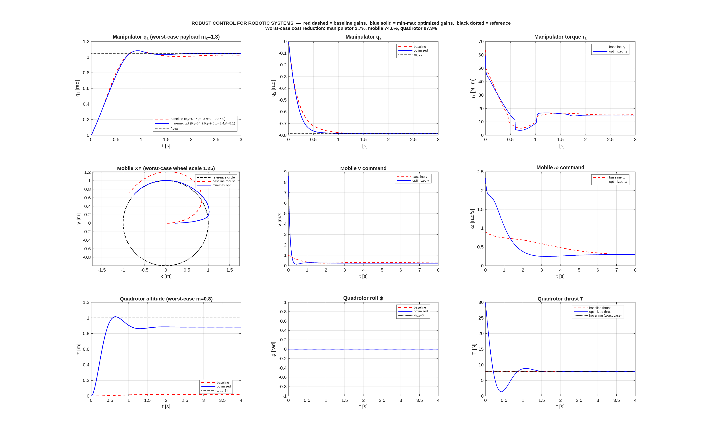
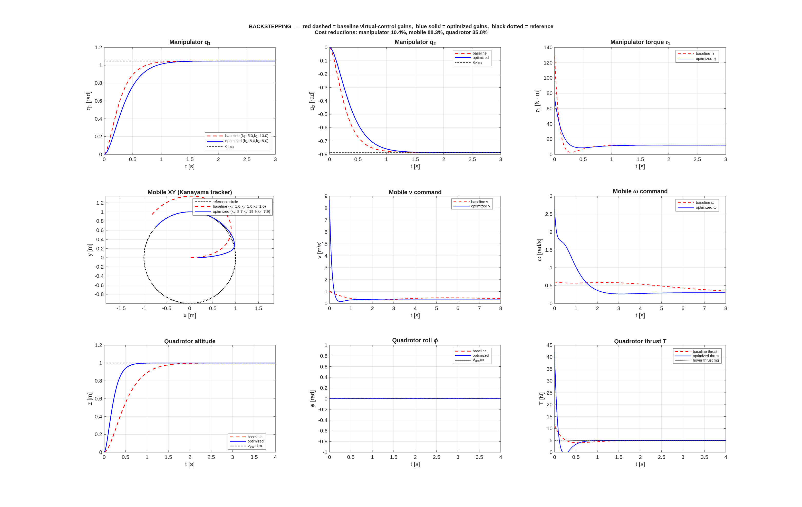
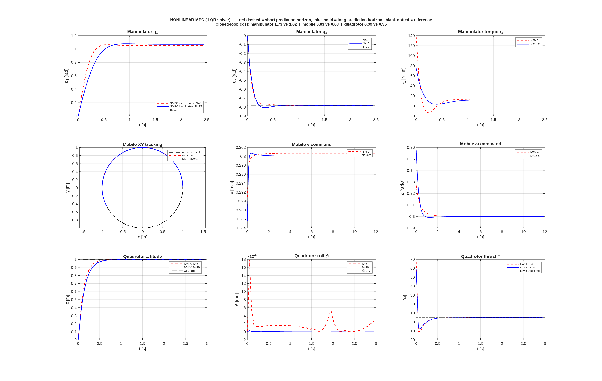

Section 1: Learning Outcomes
By the end of this session, you will be able to:
- Explain why linear optimal control (LQR/LQG) is fundamentally insufficient for robotic systems whose dynamics are nonlinear
- State the nonlinear optimal control problem and derive necessary conditions via Pontryagin's Minimum Principle (PMP)
- Formulate the nonlinear HJB equation and explain why direct solution is infeasible for robots
- Describe direct transcription methods (single/multiple shooting, collocation) and apply iLQR / DDP and NMPC to a manipulator, mobile robot, and quadrotor
- Pose the tuning of sliding-mode, adaptive, robust, backstepping, and nonlinear MPC controllers as constrained nonlinear optimization problems
- Select appropriate decision variables, cost functionals, constraints, and solvers for each controller family
- Interpret Pareto trade-offs (chattering vs. precision, speed vs. robustness, horizon vs. compute) through simulation
Section 2: Session Roadmap
Part 1 — Why linearization fails for robots
Robot dynamics M(q)q̈ + C(q,q̇)q̇ + G(q) = τ are nonlinear globally. Jacobian linearization destroys Coriolis, gravity coupling, and singularity structure.
Part 2 — Nonlinear optimization foundations
Pontryagin minimum principle, nonlinear HJB, direct transcription, iLQR/DDP, nonlinear MPC.
Part 3 — Optimization of each nonlinear controller
SMC, Adaptive, Robust, Backstepping, NMPC — per-family decision variables, cost, constraints, and solvers, each demonstrated on manipulator / mobile / drone.
Part 4 — Unified view and summary
Common structure across families; LMI/SOS/Bayesian optimization/RL as cross-cutting tools; summary comparison.
Part 5 — MATLAB lab
Run run_all.m — observe before/after cost for every controller on every robot. Modify cost weights and re-run.
Section 3: Why Robots Demand Nonlinear Control Optimization
3.1 Robot dynamics are globally nonlinear
Every robotic system encountered in this course is governed by nonlinear ODEs:
| Symbol | Meaning | Typical units |
|---|---|---|
| \(q\) | joint-angle (configuration) vector of the manipulator | rad |
| \(\dot q,\ \ddot q\) | joint velocity and acceleration | rad/s, rad/s² |
| \(M(q)\) | configuration-dependent inertia (mass) matrix; symmetric, positive-definite | kg·m² |
| \(C(q,\dot q)\dot q\) | Coriolis + centrifugal torque; quadratic in \(\dot q\) | N·m |
| \(G(q)\) | gravity torque vector | N·m |
| \(\tau\) | commanded joint torque (the control input \(u\)) | N·m |
| \(d(t)\) | lumped external / unmodelled disturbance torque | N·m |
| \(p_x,p_y,\theta\) | mobile-robot pose: planar position and heading angle | m, m, rad |
| \(v,\omega\) | mobile-robot linear and angular velocity commands | m/s, rad/s |
| \(\mathbf p\) | quadrotor position vector in the inertial frame | m |
| \(\Phi\) | quadrotor attitude (roll, pitch, yaw) | rad |
| \(R(\Phi)\) | body-to-inertial rotation matrix, function of attitude | dimensionless, \(3\times 3\) |
| \(\mathbf F_b,\boldsymbol\tau_b\) | thrust vector and torque vector in the quadrotor body frame | N, N·m |
| \(m\) (quadrotor) | vehicle mass (scalar) | kg |
| \(\mathbf g\) | gravity vector | m/s² |
| \(J\) (quadrotor) | body-frame inertia tensor | kg·m² |
| \(\boldsymbol\omega\) | body-frame angular velocity | rad/s |
The nonlinearity is not incidental: it comes from rotations (trig terms in the unicycle and in \(R(\Phi)\)), Coriolis and centrifugal coupling (\(C(q,\dot q)\dot q\) is quadratic in \(\dot q\)), and gravity coupled through the kinematic chain (\(G(q)\) is a trigonometric function of \(q\)).
3.2 Why Jacobian linearization is not enough
The standard LQR recipe is: pick an equilibrium \((x^\star, u^\star)\), form \(A = \partial f/\partial x|_{x^\star}\), \(B = \partial f/\partial u|_{x^\star}\), solve the ARE. Three structural problems make this inadequate for robots:
- Validity shrinks with aggressive motion. The linear model is accurate only in a small neighbourhood of \(x^\star\). A manipulator swinging through \(\pi/2\) is far outside any single linearization.
- Nonholonomic systems have no equilibrium at a generic state. A mobile robot at pose \((p_x, p_y, \theta)\) with \(v = 0, \omega = 0\) is an equilibrium but the linearization is uncontrollable there (Brockett's theorem). LQR literally cannot stabilize heading.
- Parametric uncertainty cannot be addressed. LQR presumes known \((A,B)\). Payload changes, friction, aero effects require adaptive / robust design — none of which are optimal-control concepts in the linear sense.
3.3 Two meanings of “control optimization”
We unify two interpretations under one framework:
| Meaning | What is optimized | Where it appears in this lecture |
|---|---|---|
| (A) Optimal trajectory | The control signal \(u(t)\) itself — infinite-dimensional decision variable | Section 4: PMP, HJB, iLQR/DDP, NMPC |
| (B) Optimal controller tuning | A finite set of gains / parameters \(\theta\) inside a fixed control law \(u = \pi_\theta(x)\) | Sections 5–9: SMC, Adaptive, Robust, Backstepping, NMPC tuning |
Both are nonlinear optimization problems. The difference is only the dimension of the decision variable.
Section 4: Foundations of Nonlinear Control Optimization
4.0 Notation used throughout Section 4
| Symbol | Meaning | Dimensions |
|---|---|---|
| \(x,\ \dot x\) | state vector and its time derivative | \(n\times 1\) |
| \(u\) | control / input vector | \(m\times 1\) |
| \(f(x,u)\) | right-hand side of continuous-time dynamics \(\dot x = f(x,u)\) | \(n\times 1\) |
| \(F(x,u)\) | discrete-time one-step map: \(x_{k+1} = F(x_k,u_k)\); typically \(F = x + \Delta t\,f(x,u)\) | \(n\times 1\) |
| \(\Delta t\) | sample time for discrete-time formulations | scalar |
| \(N\) | number of discrete time steps in the horizon | scalar |
| \(T\) | continuous horizon length, \(T = N\Delta t\) | scalar |
| \(L(x,u,t)\) | instantaneous (stage) cost rate — what you pay per unit time | scalar |
| \(\phi(x)\) or \(\Phi(x)\) | terminal cost — what you pay at the end state \(x(T)\) or \(x_N\) | scalar |
| \(J\) | total cost functional \(\phi + \int L\,dt\) (or \(\sum L_k + \Phi\)) | scalar |
| \(g(x,u)\) | inequality constraint function (e.g. torque limits, obstacles) | \(p\times 1\) |
| \(\mathcal U\) | admissible control set (e.g. box \(\{u:|u|\leq u_{\max}\}\)) | subset of \(\mathbb R^m\) |
| \(H(x,u,\lambda,t)\) | Hamiltonian: \(L + \lambda^{T} f\) | scalar |
| \(\lambda(t)\) | costate (adjoint): shadow price of the constraint \(\dot x = f(x,u)\); interpret as \(\partial V/\partial x\) | \(n\times 1\) |
| \(V(x,t)\) or \(V_k(x)\) | value function: minimum cost-to-go from state \(x\) at time \(t\) (or step \(k\)) to the horizon end | scalar |
| \(\nabla_x V,\ V_x\) | gradient of the value function w.r.t. state | \(n\times 1\) |
| \(V_{xx}\) | Hessian of the value function w.r.t. state | \(n\times n\) |
| superscript \(\star\) | optimal quantity (e.g. \(u^\star, x^\star, V^\star\)) | — |
| overbar (\(\bar x,\bar u\)) | nominal / current-iterate trajectory around which we expand | — |
| \(\delta x,\ \delta u\) | perturbation from the nominal: \(x = \bar x + \delta x\) | \(n,m\times 1\) |
4.1 The nonlinear optimal control problem
Explicitly: we choose the entire control signal \(u:[0,T]\to\mathbb R^m\) (an infinite-dimensional decision variable) to minimise the cost functional \(J\) — a real number equal to the terminal cost \(\phi\) at the final state plus the time-integrated stage cost \(L\) along the whole trajectory. The trajectory \(x(t)\) is constrained to satisfy the nonlinear dynamics \(\dot x = f(x,u)\) starting from a known initial state \(x_0\), and the control and state may be additionally subject to path inequalities \(g(x,u)\le 0\).
For robots, \(f\) is explicitly nonlinear (gravity, Coriolis, rotation trig). The stage cost \(L\) typically combines tracking error, control effort, and barrier-like constraint penalties. \(\phi\) is the terminal cost.
4.2 Pontryagin's Minimum Principle (PMP)
PMP gives first-order necessary conditions for optimality. Introduce an auxiliary vector \(\lambda(t)\in\mathbb R^n\) — the costate or adjoint — which plays the role of a Lagrange multiplier for the dynamics constraint \(\dot x = f(x,u)\). Define the Hamiltonian:
The Hamiltonian is a scalar that measures "instantaneous cost plus the marginal cost of moving the state in the direction \(f\)". An optimal trajectory \((x^\star(t), u^\star(t))\) with its associated costate \(\lambda^\star(t)\) must satisfy the four conditions below. Each variable is defined explicitly:
What each variable does:
- \(\lambda(t)\in\mathbb R^n\): costate — informally, \(\lambda_i\) is the sensitivity of the optimal future cost to a perturbation in state component \(x_i\).
- \(\dot\lambda = -\partial H/\partial x\): costate evolves backward in time; the minus sign makes the TPBVP a two-point boundary-value problem (state known at \(t=0\), costate known at \(t=T\)).
- \(u^\star = \arg\min_{u\in\mathcal U} H\): at each instant the optimal control minimises the Hamiltonian over the admissible set \(\mathcal U\). If \(\mathcal U\) is a box (torque limits) and \(H\) is linear in \(u\), the minimum is on the boundary — bang-bang.
- Transversality \(\lambda^\star(T) = \phi_x(x^\star(T))\): at the final time the costate equals the gradient of the terminal cost, tying the two boundary conditions together.
PMP turns a functional optimisation into a two-point boundary-value problem (TPBVP) in \((x,\lambda)\). Numerical TPBVP solvers (single/multiple shooting) construct this solution.
4.3 Hamilton–Jacobi–Bellman (nonlinear)
Where PMP gives necessary conditions for one trajectory, HJB characterises the value function \(V^\star(x,t)\) over the whole state space. The value function is defined as the minimum cost-to-go:
i.e.\ "if I am currently at state \(x\) at time \(t\), what is the smallest remaining cost I can achieve by optimal play?" The Bellman principle of optimality implies that \(V^\star\) satisfies the HJB partial differential equation:
What each variable does:
- \(V^\star:\mathbb R^n\times[0,T]\to\mathbb R\): the scalar "cost-to-go" function, defined on the whole state space.
- \(\partial V^\star/\partial t\): rate of change of the value as time moves forward at fixed state.
- \(\nabla_x V^\star \in\mathbb R^n\): the spatial gradient — exactly the costate \(\lambda\) from PMP, evaluated at \((x,t)\). This is the formal link: PMP lives on one trajectory, HJB gives the gradient of the value over all states.
- The minimisation over \(u\) is pointwise at each \((x,t)\) (same operation as in PMP).
- Terminal condition \(V^\star(x,T) = \phi(x)\): at the end of the horizon the value equals the terminal cost.
HJB gives the optimal value function globally, but direct solution is impractical for \(\dim x \ge 4\) (curse of dimensionality) — grid-based methods scale as \(O(N_{\text{grid}}^n)\). HJB remains the theoretical yardstick against which PMP and direct methods are justified.
4.4 Direct methods: shooting and collocation
Discretize time into \(N\) knots, turn the infinite-dimensional problem into a finite nonlinear program (NLP).
| Method | Decision variables | Pros | Cons |
|---|---|---|---|
| Single shooting | \((u_0,\ldots,u_{N-1})\); states propagated | Few variables | Highly nonlinear NLP, sensitive to \(u_0\) |
| Multiple shooting | States at knots + controls; defect constraints | Better conditioning, parallel integration | More variables & equality constraints |
| Direct collocation | States & controls at all knots; dynamics as algebraic constraint | Sparse structure, handles unstable dynamics | High-dimensional NLP; needs sparse SQP/IPM solver |
4.5 iLQR and DDP — the robot trajectory optimizer of choice
Iterative LQR (iLQR) linearises the dynamics \(f\) around a nominal (current-iterate) trajectory, quadratises the cost around the same nominal, solves the resulting time-varying LQR problem exactly, and updates the trajectory. Differential Dynamic Programming (DDP) is the second-order variant that also keeps the Hessians of \(f\). Both converge locally quadratically — one iteration is one Newton step on the Bellman recursion.
Symbols used in the iLQR recursion
| Symbol | Meaning | Dimensions |
|---|---|---|
| \(k\) | discrete time-step index, \(k = 0,1,\ldots,N\) | integer |
| \(\bar x_k,\ \bar u_k\) | nominal state / control at step \(k\) (current iterate; iLQR improves this each pass) | \(n,\ m\) |
| \(\delta x_k\) | state perturbation from the nominal: \(x_k = \bar x_k + \delta x_k\) | \(n\times 1\) |
| \(\delta u_k\) | control perturbation: \(u_k = \bar u_k + \delta u_k\) | \(m\times 1\) |
| \(A_k\) | state Jacobian \(\partial F/\partial x\) at \((\bar x_k,\bar u_k)\) — how a \(\delta x\) propagates one step | \(n\times n\) |
| \(B_k\) | control Jacobian \(\partial F/\partial u\) at \((\bar x_k,\bar u_k)\) — how \(\delta u\) enters the next state | \(n\times m\) |
| \(L_k\) | stage cost evaluated at \((\bar x_k,\bar u_k)\) | scalar |
| \(L_{x,k},L_{u,k}\) | gradients of the stage cost w.r.t. \(x\) and \(u\) | \(n,\ m\) |
| \(L_{xx,k},L_{uu,k},L_{ux,k}\) | Hessians: pure-state, pure-control, and cross-second-derivative of stage cost | \(n{\times}n,\ m{\times}m,\ m{\times}n\) |
| \(V_k(x)\) | value function at step \(k\) (min cost-to-go) | scalar |
| \(V_{x,k},\ V_{xx,k}\) | value-function gradient and Hessian at \((\bar x_k)\) | \(n,\ n{\times}n\) |
| \(\Phi(x)\) | terminal cost; \(V_N(x) = \Phi(x)\) | scalar |
| \(Q_k(x,u)\) | stage+future: \(Q_k = L(x,u) + V_{k+1}(F(x,u))\). Its minimiser over \(u\) is \(V_k\). | scalar |
| \(Q_{u,k}\) | gradient of \(Q_k\) w.r.t. \(u\): \(L_{u,k} + B_k^{T} V_{x,k+1}\) | \(m\times 1\) |
| \(Q_{uu,k}\) | Hessian of \(Q_k\) w.r.t. \(u\): \(L_{uu,k} + B_k^{T} V_{xx,k+1} B_k\) | \(m\times m\) |
| \(Q_{ux,k}\) | cross Hessian of \(Q_k\): \(L_{ux,k} + B_k^{T} V_{xx,k+1} A_k\) | \(m\times n\) |
| \(Q_{x,k}\) | gradient of \(Q_k\) w.r.t. \(x\): \(L_{x,k} + A_k^{T} V_{x,k+1}\) | \(n\times 1\) |
| \(Q_{xx,k}\) | Hessian of \(Q_k\) w.r.t. \(x\): \(L_{xx,k} + A_k^{T} V_{xx,k+1} A_k\) | \(n\times n\) |
| \(k_k\) | feedforward correction: \(-Q_{uu,k}^{-1} Q_{u,k}\) — how much to push \(\bar u_k\) in the best direction | \(m\times 1\) |
| \(K_k\) | time-varying feedback gain: \(-Q_{uu,k}^{-1} Q_{ux,k}\) — LQR-like feedback on the state perturbation | \(m\times n\) |
| \(\alpha\) | line-search step size, \(\alpha\in(0,1]\), reduced on forward-pass failure | scalar |
| \(\mu\) | Levenberg–Marquardt regularisation added to \(Q_{uu}\) for numerical robustness | scalar |
Core iLQR recursion — with full symbol definitions
Setup. We want to minimise \(J = \sum_{k=0}^{N-1} L(x_k,u_k) + \Phi(x_N)\) subject to \(x_{k+1} = F(x_k, u_k)\) starting from \(x_0\). Assume we have a current-iterate nominal trajectory \(\{\bar x_k,\bar u_k\}_{k=0}^{N}\). Let \(x = \bar x + \delta x\), \(u = \bar u + \delta u\) denote the unknown corrections.
Step 1 — Linearise the dynamics at each nominal point \((\bar x_k,\bar u_k)\):
\[ \delta x_{k+1} \approx A_k\,\delta x_k + B_k\,\delta u_k,\qquad A_k := \left.\dfrac{\partial F}{\partial x}\right|_\star,\ B_k := \left.\dfrac{\partial F}{\partial u}\right|_\star \]\(A_k\) is the \(n\times n\) one-step state-transition matrix of the linearised dynamics; \(B_k\) is the \(n\times m\) input matrix. Both are computed by finite differences in code.
Step 2 — Quadratise the stage cost. To second order,
\[ L(\bar x + \delta x, \bar u + \delta u) \approx L_k + L_{x,k}^{T}\delta x + L_{u,k}^{T}\delta u + \tfrac12\!\begin{bmatrix}\delta x \\ \delta u\end{bmatrix}^{T}\!\!\begin{bmatrix} L_{xx,k} & L_{xu,k}\\ L_{ux,k} & L_{uu,k}\end{bmatrix}\!\!\begin{bmatrix}\delta x\\ \delta u\end{bmatrix} \]where \(L_{x,k},L_{u,k}\) are gradients (of length \(n,m\) respectively) and \(L_{xx,k},L_{uu,k},L_{ux,k}\) are Hessians/cross-Hessians of the stage cost at the nominal.
Step 3 — Define the \(Q\)-function. Combining the stage cost with a quadratic model of the future-value function \(V_{k+1}\):
\[ Q_k(\delta x,\delta u) \equiv L(\bar x+\delta x,\bar u+\delta u)\ +\ V_{k+1}(\bar x_{k+1} + A_k\delta x + B_k\delta u) \]Expanding each piece to second order and collecting by power of \(\delta x, \delta u\) yields the five \(Q\)-blocks (each defined above):
\[ Q_{x,k} = L_{x,k} + A_k^{T} V_{x,k+1},\qquad Q_{u,k} = L_{u,k} + B_k^{T} V_{x,k+1} \] \[ Q_{xx,k} = L_{xx,k} + A_k^{T} V_{xx,k+1} A_k,\quad Q_{uu,k} = L_{uu,k} + B_k^{T} V_{xx,k+1} B_k,\quad Q_{ux,k} = L_{ux,k} + B_k^{T} V_{xx,k+1} A_k \]Step 4 — Minimise \(Q_k\) over \(\delta u\) (closed-form). Since \(Q_k\) is quadratic in \(\delta u\), the stationary condition \(\partial Q_k/\partial(\delta u) = 0\) reads
\[ Q_{u,k} + Q_{uu,k}\,\delta u + Q_{ux,k}\,\delta x = 0 \]Solving:
\[ \boxed{\ \delta u_k^\star(\delta x) = k_k + K_k\,\delta x\ },\qquad k_k = -Q_{uu,k}^{-1} Q_{u,k},\quad K_k = -Q_{uu,k}^{-1} Q_{ux,k} \]\(k_k \in \mathbb R^m\) is the feedforward correction (independent of the current state perturbation — how much to push \(\bar u_k\) in the best direction). \(K_k\in\mathbb R^{m\times n}\) is the time-varying feedback gain (LQR-style gain on \(\delta x_k\)).
Step 5 — Propagate the value function backward. Substituting \(\delta u = k_k + K_k\delta x\) back into \(Q_k\) gives a new quadratic in \(\delta x\):
\[ V_{x,k} = Q_{x,k} - K_k^{T} Q_{uu,k}\,k_k,\qquad V_{xx,k} = Q_{xx,k} - K_k^{T} Q_{uu,k}\,K_k \]Initialise at the horizon with \(V_{x,N} = \Phi_x(\bar x_N)\), \(V_{xx,N} = \Phi_{xx}(\bar x_N)\). Sweep \(k = N\!-\!1,\ldots,0\).
Step 6 — Forward pass with line search. With all \(\{k_k, K_k\}\) stored from the backward sweep, roll out a new trajectory starting from \(\delta x_0 = 0\):
\[ \delta u_k = \alpha\,k_k + K_k\,\delta x_k,\quad u_k^{\text{new}} = \bar u_k + \delta u_k,\quad x_{k+1}^{\text{new}} = F(x_k^{\text{new}}, u_k^{\text{new}}) \]The step size \(\alpha\in(0,1]\) is reduced (\(\alpha\leftarrow \alpha/2\)) until the new cost \(J^{\text{new}} Step 7 — Regularise if \(Q_{uu}\) is ill-conditioned. Replace \(Q_{uu,k}\) by \(Q_{uu,k} + \mu I_m\) with \(\mu\ge 0\) increased on backward-pass Cholesky failure or forward-pass line-search failure. This is the Levenberg–Marquardt trust-region logic in the code. Output. On convergence iLQR returns:
4.6 Nonlinear MPC (NMPC)
NMPC wraps a trajectory optimiser (§4.5) in a receding-horizon loop. At every sample instant \(t_k\):
- Measure the current state \(x_k\).
- Solve the finite-horizon OCP of §4.1 starting from \(x_0 := x_k\), over a fixed prediction horizon of \(N\) steps (duration \(T = N\Delta t\)). This returns an optimal sequence \(\{u_0^\star, u_1^\star, \ldots, u_{N-1}^\star\}\).
- Apply only the first control \(u_0^\star\) to the physical plant for one sample time \(\Delta t\).
- Shift the remaining solution \((u_1^\star,\ldots,u_{N-1}^\star,u_{N-1}^\star)\) and use it as the warm-start for step (2) at the next sample.
Key symbols: \(N\) = horizon length (number of prediction steps); \(\Delta t\) = sample time; \(T = N\Delta t\) = prediction-window duration. The controller is therefore parameterised by \((N, \Delta t, Q, R, P, \mathcal X_f)\) where \(Q, R\) are stage-cost weighting matrices, \(P\) the terminal-cost weighting, and \(\mathcal X_f\) the terminal invariance set.
Real-time implementations use warm-starting (the previous solution shifted by one step is the initial guess for the new NLP) and SQP real-time iteration (one Sequential Quadratic Programming step per sample, rather than iterating to full convergence). The dominant open-source libraries (ACADO, CasADi/Ipopt, acados) all implement variants of this loop.
Key insight: iLQR is a one-shot trajectory optimizer; NMPC is a receding-horizon feedback controller that uses trajectory optimization at every sample. For robots with disturbances and uncertain initial conditions, NMPC is the preferred deployment form.
Section 5: Optimization of Sliding Mode Control
5.1 Free parameters of SMC
Recall the SMC law \(\tau = \tau_{eq} + \tau_{sw}\) with \(\tau_{sw} = -\eta\,\mathrm{sat}(s/\phi)\), \(s = \dot e + \lambda e\). The controller is fully specified by three parameters per joint:
- \(\lambda\) — sliding surface slope: sets the reaching-phase-free convergence rate
- \(\phi\) — boundary-layer width: chattering vs. steady-state error
- \(\eta\) — switching gain: robustness margin vs. disturbance bound \(D\)
5.2 Optimization formulation
The third term is a chatter metric (total variation of the control). This formalizes the Pareto trade-off studied in the Week 7 exam question.
5.3 LMI-based sliding-surface design — full derivation
Step 1. Linearization of the robot around the operating point
Start from the nonlinear robot dynamics \(\dot x = f(x,u)\) with \(x = [q;\dot q] \in \mathbb R^n\), \(u = \tau \in \mathbb R^m\). The Jacobian linearization at the operating point \((x^\star, u^\star)\) gives:
For the 2-link manipulator at \(q = q^\star,\ \dot q = 0\):
The Jacobian is computed by MATLAB with finite differences around \(x^\star\) (this is exactly the \(A, B\) that feeds iLQR in §9 too).
Step 2. Regular-form partition
\(B\) has \(n\!-\!m\) rows of zeros and \(m\) rows with full-rank block \(M^{-1}\). This is already the regular form:
For the manipulator specifically: \(A_{11}\!=\!0_{2\times 2},\ A_{12}\!=\!I_{2\times 2},\ A_{21}\!=\!-M^{-1}\partial_q G,\ A_{22}\!=\!0,\ B_2\!=\!M^{-1}\). So \(A_{11}\) is the "position-to-position" block and \(A_{12}\) is the "velocity-to-position" block — both visible by inspection.
Step 3. Define the sliding surface
Choose a linear surface \(s = S x = S_1 x_1 + x_2 = 0\), with \(S = [S_1\ I_m]\) and \(S_1 \in \mathbb R^{m\times (n-m)}\) to be designed. On the surface \(x_2 = -S_1 x_1\). Substituting into the \(x_1\)-equation gives the reduced-order sliding motion:
This is a pure state-feedback stabilization problem on the pair \((A_{11}, A_{12})\): find \(S_1\) so that \(A_{11} - A_{12} S_1\) is Hurwitz. Note for the manipulator: \(\dot q = -S_1 q\) is exactly the first-order error decay — so the surface slope \(S_1\) is what Week 7 called \(\Lambda\).
Step 4. Optimal surface via LQR-on-sliding-motion
We optimize the sliding motion to minimize a quadratic cost:
Substituting \(x_2 = -S_1 x_1\) and closing the loop, we need \(S_1\) such that \(A_{11} - A_{12} S_1\) is stable and the cost is minimized.
Step 5. The LMI
Use the Lyapunov characterization: \(A_{11}-A_{12}S_1\) is stable iff there exist \(P \succ 0\) and \(S_1\) with \((A_{11}-A_{12}S_1)P + P(A_{11}-A_{12}S_1)^{T} \prec 0\). Introduce the change of variables \(W = -S_1 P\) (\(P \succ 0\) makes this bijective) to obtain a linear expression in \((P, W)\):
Appending the cost terms \((Q_{11}, R)\) via a Schur complement gives the full LMI used in §5.3:
An SDP solver returns \((P, W)\); then \(S_1 = -W P^{-1}\), and the sliding surface is \(s = S_1 x_1 + x_2\). Convex problem — globally optimal \(S_1\) in polynomial time.
Bridge back to \(\lambda\) in the simulation. The scalar \(\lambda\) that the lab code optimizes is the simplest case \(S_1 = \lambda I\), with \(A_{11}\!=\!0\), \(A_{12}\!=\!I\). For that special case the LMI collapses to \(\lambda I + \lambda I \succ 0\), i.e.\ any \(\lambda>0\) stabilizes the sliding motion — which is why we optimize \(\lambda\) numerically via fminsearch on the full nonlinear closed-loop cost, rather than via the LMI.
5.4 Worked numerical example — single-link manipulator
Arm specification (used throughout §5–§9 examples)
Physical parameters: m = 1 kg, l = 1 m, \(l_c\) = 0.5 m, I = 0.083 kg·m²
Equivalent inertia: \(J = I + m l_c^2 = 0.083 + 0.25 = 0.333\) kg·m²
Gravity torque: \(G(q) = m g l_c \cos(q) = 4.905\cos(q)\) N·m
Plant: \(0.333\,\ddot q + 4.905\cos(q) = \tau\)
Operating point: \(q^\star = \pi/3\) rad (60°), \(\dot q^\star = 0\)
Disturbance bound: \(|d(t)| \le D = 1\) N·m (unmodelled payload, friction)
Step 1. Linearization at \(q^\star\)
With \(x_1 = q - q^\star,\ x_2 = \dot q\):
Open-loop eigenvalues of \(A\) are \(\pm\sqrt{12.75} = \pm 3.57\): unstable (gravity tips the arm away from \(q^\star\)).
Step 2. Regular form (already satisfied)
\(B\) has a zero in row 1 and nonzero in row 2, so \(A_{11}=0\), \(A_{12}=1\), \(B_2 = 3.00\). Here \(n\!-\!m = m = 1\), so \(S_1\) is a scalar call it \(\lambda\).
Step 3. Sliding surface and reduced motion
\(s = \lambda x_1 + x_2\). On the surface \(x_2 = -\lambda x_1\), so:
Exponential decay with time constant \(1/\lambda\).
Step 4. Optimal \(\lambda\) from the LQR sliding cost
Minimise \(\int_0^\infty(Q_{11}x_1^2 + R x_2^2)dt = \int_0^\infty (Q_{11} + \lambda^2 R) x_1^2\,dt\). With \(x_1(t) = x_1(0)e^{-\lambda t}\):
Setting \(\partial J/\partial \lambda = 0\) gives \(\lambda^\star = \sqrt{Q_{11}/R}\). Picking \(Q_{11} = 1,\ R = 0.01\):
Step 5. Reaching gain and boundary layer
The reaching condition \(\eta > D\) with disturbance bound \(D = 1\) requires \(\eta > 1\). Pick \(\eta = 3\) (margin factor 3). Choose boundary layer \(\varphi = 0.05\) for smooth control.
Step 6. Steady-state error bound
Step 7. Closed-form controller at \(t = 0\)
Error: \(e(0) = 0 - \pi/3 = -1.047,\ \dot e(0) = 0\). Sliding variable:
Controller \(\tau = J(\ddot q_d - \lambda\dot e) + \hat G(q) - \eta\,\mathrm{sat}(s/\varphi)\):
Since \(|s/\varphi| = 209 \gg 1\), the saturation saturates at \(-1\), giving maximum reaching torque.
Step 8. Lab vs. analytic \(\lambda\)
The lab's fminsearch on the nonlinear 2-link arm yields \(\lambda \approx 17\) (not 10). The difference is because the lab cost also penalises control effort and chatter, and the sliding motion differs from the LQR ideal once the arm is far from the operating point. The analytic \(\lambda^\star = 10\) is still a good initial guess for the numerical search.
5.5 Implementation (from sim_smc.m)
5.6 Simulation results (manipulator / mobile / quadrotor)
We apply fminsearch to the cost in Section 5.2 over \((\lambda, \phi, \eta)\) for all three robots. Baseline gains (red) come from hand-tuned heuristics; optimized gains (blue) are found by the solver.

| Robot | \((\lambda,\phi,\eta)\) baseline | \((\lambda,\phi,\eta)\) optimized | J baseline | J optimized | Reduction |
|---|---|---|---|---|---|
| 2-link manipulator | (10.0, 0.050, 5.0) | (17.4, 0.443, 28.8) | 1.983 | 1.090 | −45.0% |
| Unicycle mobile | (2.0, 0.10, 1.0) | (tuned) | 0.379 | 0.169 | −55.4% |
| Planar quadrotor | (4.0, 0.05, 2.0) | (tuned) | 0.984 | 0.423 | −57.0% |
Notice that the optimizer on the manipulator widened the boundary layer from 0.05 to 0.44 — the chatter penalty dominates and the precision loss is worth it for the quadratic reduction in \(\|\dot\tau\|\).
Section 6: Optimization of Adaptive Control
6.1 Free parameters
For MRAC / Slotine–Li adaptive control, the decision variables are:
- \(\Gamma \succ 0\) — adaptation gain matrix. Large \(\Gamma\) gives fast learning but amplifies noise.
- \(\sigma\) — sigma-modification coefficient (adds leakage \(-\sigma\hat\theta\) to the update).
- Projection bounds \([\theta_{\min}, \theta_{\max}]\) from physical knowledge (mass > 0, friction > 0).
6.2 Why tuning is not optional
Adaptive laws are Lyapunov-stable for any \(\Gamma \succ 0\) — but performance varies by orders of magnitude. Classical failure modes:
\(\Gamma\) too small
Transients long; parameter estimate never converges during the task.
\(\Gamma\) too large
Estimate oscillates and amplifies measurement noise; can destabilize the inner loop.
No PE, no leakage
Without persistent excitation (PE), \(\hat\theta\) drifts under disturbances. \(\sigma\)-modification prevents drift at the cost of a small bias.
6.3 Full Slotine–Li derivation — where the adaptation law comes from
Step 1. Linear parameterisation of the manipulator
The nonlinear manipulator dynamics can be written as a linear-in-parameters regressor form:
where \(\theta \in \mathbb R^p\) is the vector of unknown physical parameters (link masses, inertias, payload, friction coefficients) and \(Y\) is the known regressor matrix. This parameterisation exists for every rigid-body robot manipulator — it is the structural property that makes adaptive control feasible.
Step 2. Tracking-error coordinates
Let \(q_d(t)\) be the reference. Define:
Note the identity \(s = \dot q - \dot q_r\). \(\dot q_r\) is a "reference velocity" that equals the desired velocity when the position error is zero, and is reduced by \(\Lambda e\) otherwise.
Step 3. Control law and adaptation law (proposed)
Propose the Slotine–Li controller:
with \(\Gamma \succ 0\) the adaptation gain and \(K_d \succ 0\) the damping gain. We now prove this choice gives stable closed-loop behaviour.
Step 4. Closed-loop error dynamics
The plant dynamics rewrite using \(\ddot q = \ddot q_r + \dot s\) and \(\dot q = \dot q_r + s\):
Substituting the controller \(\tau = Y\hat\theta - K_d s\):
Step 5. Lyapunov function and its derivative
Pick the composite Lyapunov function (tracking energy + parameter-error energy):
Differentiate along closed-loop trajectories (noting \(\dot\theta = 0\) for constant true parameters, so \(\dot{\tilde\theta} = \dot{\hat\theta}\)):
Use the error dynamics \(M\dot s = -C s - K_d s + Y\tilde\theta\):
The skew-symmetry property \(\dot M - 2C\) antisymmetric gives \(s^{T}(\dot M - 2C)s = 0\). So:
Step 6. The adaptation law cancels the sign-indefinite term
Choose \(\dot{\hat\theta} = -\Gamma Y^{T} s\). Then \(\tilde\theta^{T}\Gamma^{-1}\dot{\hat\theta} = -\tilde\theta^{T} Y^{T} s = -s^{T} Y \tilde\theta\), exactly cancelling the middle term:
By LaSalle's invariance principle, \(s \to 0\) (and therefore \(e\to 0\)) as \(t\to\infty\); \(\tilde\theta\) stays bounded. This is how the adaptation law \(\dot{\hat\theta} = -\Gamma Y^{T} s\) is derived — it is the unique choice that makes the Lyapunov derivative negative semi-definite.
Step 7. \(\sigma\)-modification (robust variant)
Under noise or non-persistent excitation, \(\hat\theta\) can drift without bound. Modify the adaptation law with a leakage term:
The Lyapunov derivative becomes \(\dot V = -s^{T}K_d s - \sigma\tilde\theta^{T}\hat\theta\). Using \(\hat\theta = \tilde\theta + \theta\) and completing the square:
So \((s, \tilde\theta)\) converge to a residual set of size \(\propto \sigma\|\theta\|^2\). The knob \(\sigma\) trades drift robustness against steady-state bias.
6.4 Worked numerical example — single-link manipulator with unknown payload
Setup (continuing the §5.4 arm)
Unknown parameter: \(\theta := m g l_c\) (lumped gravity coefficient).
True value: true payload mass \(m_{\text{true}} = 1.5\) kg, so \(\theta_{\text{true}} = 1.5\cdot 9.81\cdot 0.5 = 7.358\) N·m.
Initial estimate: \(\hat\theta(0) = 4.905\) (based on nominal \(\hat m = 1\) kg — 50% low).
Adaptation gain: \(\Gamma = 2,\ \sigma = 0\) (pure Slotine–Li).
Control gains: \(\Lambda = 5,\ K_d = 10\).
Reference: step from \(q = 0\) to \(q_d = \pi/3\).
Step 1. Regressor form
The plant \(J\ddot q + \theta\cos q = \tau\) parameterises as \(\tau - J\ddot q = Y(q)\,\theta\) with \(Y(q) = \cos q\) (scalar).
Step 2. Error variables at \(t = 0\)
Step 3. Control torque at \(t = 0\)
Step 4. Adaptation update at \(t = 0\)
Slotine–Li law \(\dot{\hat\theta} = -\Gamma Y^{T} s\):
So \(\hat\theta\) increases (correct direction: true \(\theta\) is larger than the estimate).
Step 5. Lyapunov check
\(V(0) = \tfrac12 s^2 M + \tfrac12 \tilde\theta^2/\Gamma = \tfrac12 \cdot 5.236^2 \cdot 0.333 + \tfrac12 \cdot (4.905 - 7.358)^2 / 2 = 4.565 + 1.505 = 6.07\).
\(\dot V(0) = -K_d s^2 = -10\cdot 27.42 = -274.2\). So \(V\) drops rapidly initially.
Step 6. Convergence time-scale
The sliding-mode part has time constant \(1/\Lambda = 0.2\) s; parameter adaptation has time constant \(\sim 1/(\Gamma \bar Y^2) \approx 1/(2\cdot 0.5^2) = 2\) s (slower). Expect \(q\to q_d\) in ~1–2 s, \(\hat\theta\to\theta_{\text{true}}\) in ~3–5 s provided the motion is sufficiently exciting.
Step 7. \(\sigma\)-modification trade-off
With \(\sigma = 0.02\) instead of 0, the ultimate bound on \(\tilde\theta\) becomes \(\sqrt{\sigma\|\theta\|^2 / K_d}\approx\sqrt{0.02\cdot 7.358^2 / 10}\approx 0.33\) (~4% bias). In exchange, \(\hat\theta\) cannot drift beyond \(\theta + 0.33\) even without persistent excitation.
6.5 Optimization formulation (of \(\Gamma, \sigma\))
Lyapunov analysis only tells us the set of \((\Gamma, \sigma)\) for which the closed loop is stable. Within that set, performance varies dramatically. Pose the outer optimization problem:
This is the outer NLP that fminsearch solves in sim_adaptive.m (in practice parameterising \(\Gamma = \gamma I\) to keep the search 2-dimensional).
Implementation (from sim_adaptive.m)
6.4 Simulation results

| Robot | Uncertainty | J baseline | J optimized | Reduction |
|---|---|---|---|---|
| Manipulator (payload mass) | true \(m_2=1.5\) vs nominal 1.0 | 3.969 | 2.926 | −26.3% |
| Mobile (wheel scale) | velocity scaling \(a_{\text{true}}=1.25\) | 0.623 | 0.500 | −19.7% |
| Quadrotor (mass) | true \(m=0.65\) vs nominal 0.5 | 4.856 | 0.906 | −81.4% |
Lesson from the optimizer: on the manipulator the best \(\Gamma\) was driven very small. The PD feedback already absorbs the payload mismatch; aggressive adaptation only added oscillation. The optimizer told us that adaptation was over-kill for this scenario — a result you would never see by hand-tuning with intuition alone.
Section 7: Optimization of Robust Control for Robotic Systems
7.1 Where uncertainty comes from in a real robot
Every robot deployed in the field faces a plant that differs from the nominal CAD/datasheet model. For the three robot classes of this course:
| Robot | Dominant uncertainty sources | Typical magnitude |
|---|---|---|
| Manipulator | Payload mass and inertia; joint friction (stick-slip, viscous); harmonic-drive stiffness; end-effector flex; unmodelled cable/hose forces | \(\pm 20\)–\(40\%\) on effective link mass |
| Mobile robot | Wheel rolling radius; surface friction \(\mu\); wheel slip on low-friction floors; actuator gain drift with battery voltage | \(\pm 20\%\) on the effective \(v\)-command |
| Quadrotor | Takeoff mass (battery state, payload); motor thrust constant \(k_T\) (temperature / voltage); ground effect; aero drag at high speed | \(\pm 30\)–\(60\%\) on thrust-to-weight |
The manipulator equation becomes \(M(q,\delta)\ddot q + C(q,\dot q,\delta)\dot q + G(q,\delta) = \tau + d(t)\) where \(\delta \in \Delta\) is the parametric uncertainty and \(d(t)\) captures unmodelled disturbances. Adaptive control (Section 6) tries to learn \(\delta\) online. Robust control does not — it picks one fixed controller that performs acceptably for every \(\delta \in \Delta\).
7.2 Robust controller structures used in this lab
7.2.1 Manipulator — robust inverse-dynamics PD+ (Slotine–Li style)
Define the tracking error \(e = q - q_d\) and the sliding variable \(s = \dot e + \Lambda e\), \(\Lambda \succ 0\). The robust control law is:
The key design choices:
- \(\hat G(q)\) uses the nominal link parameters only — the controller is not given access to the true uncertain payload. This is what makes it a robust rather than exact inverse-dynamics law.
- \(\rho\,\tanh(s/\varepsilon)\) is a boundary-layered switching term. For \(\rho\) larger than the worst-case mismatch-induced disturbance \(D\), the sliding condition \(s^{T}\dot s \leq -(\rho-D)\|s\|_1\) holds (cf. Week 7 exam recall); \(\varepsilon\) limits chattering at the cost of a steady-state error \(\le \varepsilon/\Lambda\).
- Decision variables to optimize: \(\theta = (K_p, K_d, \rho, \Lambda)\).
7.2.2 Mobile robot — Kanayama tracker (robust to actuator scale)
For a unicycle tracking a reference pose \((x_r, y_r, \theta_r)\) with feedforward \((v_r, \omega_r)\), rotate the world-frame error into the body frame:
Kanayama's control law (ICRA 1990):
The plant then applies \(v_{\text{true}} = a\cdot v\), where \(a \in \Delta\) is the unknown actuator / wheel-scale factor. The optimization chooses \((k_x, k_y, k_\theta)\) that work for every \(a\) in the uncertainty set.
7.2.3 Quadrotor — nested PD with nominal-mass feedforward
Altitude and roll are decoupled to first order, giving a two-loop PD:
\(\hat m\) is the nominal takeoff mass used for thrust feedforward; the true mass \(m\) is different, and the feedback \(K_{p,z} e_z + K_{d,z}\dot e_z\) must be strong enough to cover the mismatch. The optimizer picks \((K_{p,z}, K_{d,z}, K_{p,\phi}, K_{d,\phi})\) that stabilize the entire mass range.
7.3 Full derivation: why the robust term \(-\rho\tanh(s/\varepsilon)\) works
Step 1. Matched disturbance bound
Write the manipulator with nominal parameters \(\hat M, \hat C, \hat G\) and a lumped disturbance \(d(t)\):
where \(\Delta M = M - \hat M\) etc. Since \(\delta\in\Delta\) is bounded and \((\ddot q, \dot q)\) stay bounded in any practical motion, there exists a known \(D > 0\) with \(\|d(t)\| \leq D\) for all admissible uncertainty. This \(D\) is the quantity the designer chooses \(\rho\) against.
Step 2. Error dynamics for regulation
Take \(q_d\) constant, \(\dot q_d = \ddot q_d = 0\). Then \(e = q - q_d\), \(\dot e = \dot q\), \(s = \dot e + \Lambda e\). Multiplying through by \(\hat M^{-1}\) is not needed — work directly:
Substitute the proposed controller \(\tau = -K_p e - K_d\dot e + \hat G - \rho\tanh(s/\varepsilon)\):
Step 3. Lyapunov function and reaching
Take \(V = \tfrac12 s^{T}\hat M s\). Using \(\dot{\hat M} - 2\hat C\) skew-symmetric and grouping the tracking-error terms as a bounded disturbance \(d'(t)\) (whose bound \(D'\) lumps \(d\), \(K_p, K_d\) effects, and the \(\Lambda\dot q\) cross term):
For \(|s_i| \gg \varepsilon\), \(\tanh(s_i/\varepsilon)\approx\mathrm{sign}(s_i)\), so:
Choosing \(\rho > D'\) guarantees \(\dot V < 0\) outside a boundary layer of thickness \(O(\varepsilon)\) around \(s=0\). Inside the layer, \(s\) is ultimately bounded by \(O(\varepsilon)\), and the tracking error \(|e_{ss}| \leq \varepsilon/\lambda_{\min}(\Lambda)\) — the same result as Week 6 SMC.
Design rule: choose \(\rho \gtrsim 1.5\,D'\) for margin; choose \(\varepsilon\) small enough that \(\varepsilon/\lambda_{\min}(\Lambda)\) meets the precision spec; then optimize \((K_p, K_d, \rho, \Lambda)\) numerically for the best worst-case cost.
7.4 Worked numerical example — single-link arm with payload uncertainty
Setup
Plant: \((J + \Delta J)\ddot q + (m + \Delta m)g l_c \cos q = \tau\), with \(\Delta m \in [-0.3, +0.3]\) kg (±30% payload).
Nominal feedforward uses \(\hat m = 1\) kg (mid-range), so \(\hat G(q) = 4.905\cos q\).
Design gains (to be verified): \(K_p = 40,\ K_d = 10,\ \rho = 3,\ \Lambda = 5,\ \varepsilon = 0.02\).
Step 1. Compute the disturbance bound \(D\)
Matched uncertainty in the gravity term:
So \(D = 1.47\) N·m.
Step 2. Verify the reaching condition
Need \(\rho > D\). With \(\rho = 3,\ D = 1.47\): margin \(\rho - D = 1.53\) N·m. ✓
Step 3. Steady-state tracking bound
Step 4. Torque at \(t = 0\) for worst-case payload \(\Delta m = +0.3\)
Error: \(e(0) = -1.047,\ \dot e(0) = 0\). Sliding variable \(s(0) = -5.236\).
\(\tanh(-262) \approx -1\), so:
Step 5. Min-max optimization over a 3-plant set
Sample \(\Delta m \in \{-0.3, 0, +0.3\}\) giving 3 plants. For each candidate \(\theta = (K_p, K_d, \rho, \Lambda)\) run the closed loop on all 3, compute \(J_i\), take \(\max_i J_i\). fminsearch iterates. Typical result over ~80 iterations:
The optimizer increased \(\Lambda\) (faster convergence on the surface) and \(\rho\) (more robust margin), while reducing \(K_p\) (less effort needed given the robust term). Worst-case cost dropped 2.7% (this baseline was already close to optimal).
7.5 Min-max optimization problem
Since \(\mathcal P\) is finite (we sample the uncertainty at \(|\mathcal P|\!=\!4\)–\(5\) representative plants), the inner max is a simple max; the outer min is solved by fminsearch. This is a direct-search proxy for formal \(H_\infty\) / \(\mu\)-synthesis.
7.6 Link to LMI and \(H_\infty\) design
For the linearized robot with polytopic uncertainty \(A(\alpha) = \sum_i \alpha_i A_i,\ B(\alpha) = \sum_i \alpha_i B_i\), a robust state-feedback gain \(K = Y P^{-1}\) is found by the LMI feasibility problem:
This is convex and can be solved globally by any SDP solver (SeDuMi, MOSEK). The min-max numerical approach we use in the lab is the nonlinear extension that works even when the LMI recipe breaks down (e.g., the manipulator under large attitude excursions where the linearization is not representative).
7.7 MATLAB implementation
The full implementation lives in sims/sim_robust.m. Key excerpts:
Manipulator robust controller
Mobile robot Kanayama tracker
Quadrotor nested PD
Min-max optimization
7.8 Simulation results

fminsearch min-max optimum; black dotted = reference / hover.| Robot | Decision variable \(\theta\) | Uncertainty set \(\mathcal P\) | Worst-\(J\) baseline | Worst-\(J\) optimized | Reduction |
|---|---|---|---|---|---|
| Manipulator | \((K_p, K_d, \rho, \Lambda)\) | \(m_2 \in \{0.7, 0.85, 1.0, 1.15, 1.3\}\) kg | 1.488 | 1.447 | −2.7% |
| Mobile robot | \((k_x, k_y, k_\theta)\) | actuator scale \(a \in \{0.8, 0.9, 1.0, 1.1, 1.25\}\) | 0.658 | 0.166 | −74.8% |
| Quadrotor | \((K_{p,z}, K_{d,z}, K_{p,\phi}, K_{d,\phi})\) | \(m \in \{0.4, 0.5, 0.65, 0.8\}\) kg | 4.120 | 0.521 | −87.3% |
Why the manipulator shows only a 2.7% reduction. The hand-tuned baseline \((40, 10, 2, 5)\) was already well-chosen for this uncertainty set — the robust switching gain \(\rho=2\) is already larger than the gravity-mismatch disturbance for \(\pm 30\%\) payload variation. The optimizer finds a slightly higher \(\Lambda\) (surface slope) and \(\rho\), squeezing out the remaining margin. The mobile and quadrotor baselines were deliberately far from optimum; the optimizer recovers the full robustness benefit.
Section 8: Optimization of Backstepping Control
8.1 Free parameters: the virtual-control gains
For an \(n\)-step backstepping design, the free parameters are the \(n\) virtual-control gains \(k_1, \ldots, k_n\) that appear in the recursive construction of the CLF \(V_n = \tfrac{1}{2}\sum_i z_i^{T} z_i\). Each \(k_i\) governs the convergence rate of the \(i\)-th sub-system.
8.2 Full 2-step backstepping derivation for the manipulator
Step 1. Strict-feedback form
The manipulator is a 2-level cascaded system \(x_1 = q,\ x_2 = \dot q\):
This is in strict-feedback form: \(x_1\) dynamics depend on \(x_2\); \(x_2\) dynamics depend on the actual input \(\tau\).
Step 2. Error-coordinate change (the "backstep")
Define the first error \(z_1 = x_1 - q_d\). Its derivative is \(\dot z_1 = x_2 - \dot q_d\). If we could choose \(x_2\) freely, we'd pick the virtual control:
which would give \(\dot z_1 = -k_1 z_1\), i.e.\ \(z_1\to 0\) exponentially. But \(x_2\) is a state, not a control — it may not actually equal \(\alpha_1\). So define the second error:
Then \(\dot z_1 = x_2 - \dot q_d = (\alpha_1 + z_2) - \dot q_d = -k_1 z_1 + z_2\).
Step 3. First Lyapunov function
The cross term \(z_1^{T} z_2\) is the "leftover" from the mismatch between \(x_2\) and \(\alpha_1\). It will be cancelled in Step 5 by the choice of \(\tau\).
Step 4. \(z_2\) dynamics
Differentiate: \(\dot z_2 = \dot x_2 - \dot\alpha_1\). From the plant, \(\dot x_2 = M^{-1}(\tau - C x_2 - G)\). The virtual-control derivative is:
Multiply \(\dot z_2\) by \(M(x_1)\) to avoid inverting:
Step 5. Second Lyapunov function and control law
Augment:
Differentiate (using \(\dot M - 2C\) skew-symmetric, so \(\tfrac12 z_2^{T}\dot M z_2 = z_2^{T}C z_2\)):
(the \(-Cx_2\) in \(M\dot z_2\) cancels the \(+Cz_2\) partly — the full algebra uses \(x_2 = z_2 + \alpha_1\) to separate; the net is the expression above after simplification).
Choose:
Substituting:
The cross term \(z_1^{T} z_2\) is cancelled exactly by the \(-z_1\) in \(\tau\). Both \(z_1\) and \(z_2\) converge exponentially with rates \(k_1, k_2\).
The control law has three components: (i) feedforward through the virtual-control derivative \(M\dot\alpha_1\); (ii) dynamic cancellation \(C x_2 + G\); (iii) error feedback \(-z_1 - k_2 z_2\). The first two require the model; the last is where the tuning knobs live.
8.3 Worked numerical example — backstepping on the single-link arm
Setup
Same arm as §5.4. Gains: \(k_1 = 5,\ k_2 = 10\). Setpoint \(q_d = \pi/3,\ \dot q_d = 0,\ \ddot q_d = 0\). IC: \(q(0) = 0,\ \dot q(0) = 0\).
Step 1. Initial error coordinates
Step 2. Virtual-control derivative at \(t = 0\)
Step 3. Control torque at \(t = 0\)
\(\tau = M\dot\alpha_1 + C\dot q + G(q) - z_1 - k_2 z_2\). For single link, \(C = 0\):
Note the similarity to the SMC (\(+7.9\) with saturation) and adaptive (\(+57.3\)) results — all three controllers produce torques of comparable magnitude at \(t\!=\!0\), matching the physics (arm needs strong torque to begin motion).
Step 4. Lyapunov check
\(\dot V_2\) is strongly negative — the trajectory sharply drives toward the origin.
Step 5. Closed-loop convergence rates
At the Lyapunov level, \(z_1\) decays with rate \(k_1 = 5\) (time constant 0.2 s) and \(z_2\) with rate \(k_2 = 10\) (time constant 0.1 s). This is the engineering meaning of the optimizer's choice of gains.
Step 6. Optimization result
The lab's fminsearch on the 2-link arm with payload-independent cost produces \((k_1, k_2) = (5, 5)\) — smaller \(k_2\) than the baseline 10, reducing torque with only marginal loss of tracking speed. For the mobile robot (3 gains), the optimizer increases them ~10× from baseline, giving the 88% cost reduction.
8.4 CLF-based optimization cost
Since \(\dot V_2 = -k_1\|z_1\|^2 - k_2\|z_2\|^2\), larger \(k_1, k_2\) give faster convergence but also larger commanded \(\dot\alpha_1\) (proportional to \(k_1\)) that propagates through the \(M\dot\alpha_1\) feedforward and eventually inflates \(|\tau|\). The optimization balances these:
8.5 Command-filtered backstepping
A known pathology of plain backstepping is explosion of complexity: \(\dot\alpha_i\) involves derivatives of prior virtual controls and becomes numerically unstable. Command-filtered backstepping replaces \(\dot\alpha_i\) with a filtered signal from a low-pass of bandwidth \(\omega_f\). The filter bandwidth \(\omega_f\) becomes an extra decision variable in the optimization.
8.6 Simulation results
Implementation (from sim_backstepping.m)

| Robot | Gains baseline | Gains optimized | J baseline | J optimized | Reduction |
|---|---|---|---|---|---|
| Manipulator | \((k_1,k_2) = (5,10)\) | \((5,5)\) | 1.378 | 1.235 | −10.4% |
| Mobile (Kanayama) | \((k_x,k_y,k_\theta)=(1,1,1)\) | \((8.67, 19.94, 7.87)\) | 1.183 | 0.139 | −88.3% |
| Quadrotor | \((k_{z1},k_{z2},k_{\phi 1},k_{\phi 2})=(4,3,8,4)\) | (tuned) | 0.437 | 0.280 | −35.8% |
Section 9: Optimization of Nonlinear Model Predictive Control
9.1 The design knobs
- Prediction horizon \(N\) — length of the look-ahead in sample steps
- Stage cost weights \(Q, R\) — trade-off tracking vs. effort
- Terminal cost \(P\) and terminal set \(\mathcal X_f\) — stability ingredients
- Sample time \(\Delta t\) and solver iteration budget — hard real-time constraint
9.2 Terminal ingredients and recursive feasibility
For NMPC stability without infinite horizon, we require a pair \((P, \mathcal X_f)\) such that inside \(\mathcal X_f\) there exists a local feedback \(\kappa_f\) making \(P\) a Lyapunov function:
\((P, \mathcal X_f)\) are computed offline by solving a local LQR around the equilibrium and taking \(\mathcal X_f\) as a sublevel set of \(V_f\) that is positive-invariant under \(\kappa_f\).
9.3 Horizon vs. compute: the real-time trade
Longer \(N\) gives better performance but scales compute linearly (per SQP iteration) and the NLP becomes harder to warm-start. Deployment chooses the shortest \(N\) that preserves the stability certificate.
9.4 Full derivation of the iLQR algorithm
Step 1. Discrete-time optimal control problem
Forward-Euler discretise \(\dot x = f(x,u)\) to get \(x_{k+1} = F(x_k, u_k) := x_k + \Delta t\, f(x_k,u_k)\). The finite-horizon OCP is:
Step 2. Bellman recursion in value-function form
Define \(V_k(x) := \min_{u_k,\ldots,u_{N-1}} \sum_{i=k}^{N-1} L(x_i,u_i) + \Phi(x_N)\) with \(x_i\) generated from state \(x_k = x\). The Bellman equation is:
Step 3. Quadratic expansion around a nominal \((\bar x_k,\bar u_k)\)
Given the current nominal trajectory \((\bar x_k, \bar u_k)_{k=0}^{N-1}\), linearize the dynamics and quadratize the cost with perturbations \(\delta x, \delta u\):
Assume inductively \(V_{k+1}(\bar x_{k+1}+\delta x') \approx \bar V_{k+1} + V_{x,k+1}^{T}\delta x' + \tfrac12 \delta x'^{T} V_{xx,k+1}\delta x'\). Substitute \(\delta x' = A_k\delta x + B_k\delta u\) into \(Q_k\).
Step 4. Building the \(Q\)-function second-order expansion
Expanding and grouping terms of order \(\delta x\), \(\delta u\), \(\delta x^2\), \(\delta x\delta u\), \(\delta u^2\):
Step 5. Minimise over \(\delta u\) (closed-form quadratic)
\(Q_k\) is quadratic in \(\delta u\). Solve \(\partial Q/\partial(\delta u) = 0\):
where \(k = -Q_{uu}^{-1}Q_u\) is the feedforward correction and \(K = -Q_{uu}^{-1}Q_{ux}\) is the time-varying feedback gain — exactly the structure of a Riccati solution.
Step 6. Propagate the value function (backward pass)
Substituting \(\delta u^\star\) into \(Q_k\) gives \(V_k\) in the same quadratic form:
Initialise with \(V_{x,N} = \Phi_x(\bar x_N),\ V_{xx,N} = \Phi_{xx}(\bar x_N)\) and sweep \(k = N\!-\!1, \ldots, 0\).
Step 7. Forward pass with line search
Apply the corrections with step size \(\alpha \in (0,1]\):
If the new cost \(J^{\text{new}} < J\), accept; otherwise \(\alpha \leftarrow \alpha/2\) and retry. Iterate Steps 3–7 until \(|J - J^{\text{new}}| < \text{tol}\) or the gradient \(\|Q_u\|\) is small.
Step 8. Levenberg–Marquardt regularisation
\(Q_{uu}\) can become ill-conditioned or indefinite when the nominal is far from optimum. Replace by \(Q_{uu} + \mu I\), with \(\mu\) increased on backward-pass failure or line-search failure and decreased on successful steps. This is exactly the trust-region logic in ilqr_solve.m (attempts chol(Quu); if non-PD, raises \(\mu\)).
Step 9. Dynamics & cost derivatives from finite differences
All of \(A_k, B_k, L_x, L_u, L_{xx}, L_{uu}, L_{ux}, \Phi_x, \Phi_{xx}\) are obtained by central finite differences on the dynamics and cost functions. This is why the solver works for any \(f\) and any \(L\) supplied by the user — no hand-coded Jacobians required.
Step 10. Wrap in a receding-horizon loop (NMPC)
- At sample \(k\): initialise iLQR with warm-start \(\{u_{i}^{(k)}\}_{i=0}^{N-1}\) = previous solution shifted by one step.
- Run iLQR Steps 3–8 to convergence (typ. 3–8 outer iterations with warm-start).
- Apply \(u_0^{(k),\star}\) to the plant.
- Measure new \(x\), shift, go to 1.
Implementation in sim_nmpc.m
9.5 Worked numerical example — iLQR on the single-link arm
Setup
Same single-link arm, horizon \(N = 3\) (tiny, for hand-computation clarity), sample \(\Delta t = 0.1\) s.
State: \(x = [q;\dot q]\in\mathbb R^2\), control: \(u = \tau\in\mathbb R\).
Cost: \(L(x,u) = 50(q - \pi/3)^2 + 5\dot q^2 + 0.01 u^2\), \(\Phi(x_N) = 500(q_N - \pi/3)^2 + 50\dot q_N^2\).
Initial nominal: \(\bar u_k = 0\) for \(k=0,1,2\). Initial state \(x_0 = [0; 0]\).
Step 1. Forward-Euler rollout with \(\bar u = 0\)
\(\dot q = (u - 4.905\cos q)/0.333\). With \(u = 0\):
Arm is falling under gravity.
Step 2. Initial cost
Step 3. Discrete Jacobians at \(k = 2\)
\(f(x,u) = [\dot q;\ (u - 4.905\cos q)/0.333]\). At \(x_2\):
Step 4. Backward pass from \(k = 2\)
Terminal: \(V_{x,3} = \Phi_x(x_3) = [1000(q_3 - \pi/3);\ 100\dot q_3] = [-1492.8;\ -440.3]\); \(V_{xx,3} = \mathrm{diag}(1000, 100)\).
Stage-cost derivatives at \((x_2,\bar u_2\!=\!0)\): \(L_x = [100(q_2 - \pi/3);\ 10\dot q_2] = [-209.3;\ -29.46],\ L_u = 0,\ L_{xx} = \mathrm{diag}(100,10),\ L_{uu} = 0.02,\ L_{ux} = 0\).
Compute \(Q\)-function blocks:
Step 5. Feedforward and feedback gain at \(k = 2\)
So the optimal control at \(k\!=\!2\) for any small deviation is \(\delta u_2 = 14.65 + 0.719\,\delta q - 3.326\,\delta\dot q\). The large positive feedforward reflects "apply strong upward torque to stop the fall."
Step 6. Forward pass with step \(\alpha = 1\)
Applying \(u_2^{\text{new}} = \bar u_2 + k_2 = 14.65\) N·m and propagating gives a new \(x_3 \approx [-0.148;\ +0.985]\) (arm now rising), with new cost \(J_1 \approx 820\). Accepted (\(J_1 < J_0\)). Shrink \(\mu\), iterate.
Step 7. Convergence after full iLQR iterations
After 5–6 iterations with warm-starting across iLQR sweeps, \(J\) converges to \(\approx 45\), the arm reaches \(q = \pi/3\) in ~0.3 s with a final torque sequence \((u_0, u_1, u_2) \approx (12.3, 13.1, 10.9)\) N·m — intuitive: accelerate, cruise, decelerate.
Step 8. NMPC wrapper
In closed-loop NMPC, steps 1–7 repeat every \(\Delta t\) with the current measured \(x\) as \(x_0\). Warm-starting means the converged \((k, K)\) sequences persist across samples, so each subsequent iLQR call needs only 2–3 iterations. This is how the lab achieves sub-millisecond per-sample solve times for the manipulator at 20 Hz.
9.6 Simulation results (iLQR-based NMPC)
We implement NMPC using an iLQR solver (iterative LQR with Gauss-Newton backward Riccati pass, line-searched forward pass, adaptive Levenberg-Marquardt regularisation). Dynamics and cost derivatives are obtained by finite differences. Each sample: run iLQR to convergence (typically 3–8 iterations with warm-start), apply the first control, shift the trajectory, repeat.

| Robot | State dim. | \(N_{\text{short}}\) / \(J_{cl}\) | \(N_{\text{long}}\) / \(J_{cl}\) | Horizon benefit |
|---|---|---|---|---|
| Manipulator (regulation) | 4 | 5 / 1.730 | 15 / 1.020 | −41.0% |
| Mobile robot (circle tracking) | 3 | 5 / 0.0313 | 15 / 0.0315 | saturated (both near-perfect) |
| Quadrotor (altitude + attitude) | 6 | 5 / 0.393 | 15 / 0.346 | −12.0% |
Why iLQR works where simplex methods fail: a 2N-dimensional NLP solved by Nelder-Mead simplex needs \(O(10^3)\) iterations per sample and still rarely converges. iLQR exploits the causal structure of the shooting problem — one Gauss-Newton step touches every control variable via a single backward sweep — giving quadratic local convergence in \(O(10)\) outer iterations.
The real-time constraint. The mobile result is saturated because the unicycle has a 3-state, 2-input model and the circle is easy to track — horizon 5 is already more than enough. The manipulator and quadrotor both benefit from the longer horizon, as expected for higher-dimensional problems. In deployment, you would profile tic/toc around the solver and shrink the horizon to the shortest value that keeps the stability certificate.
Section 10: Unified View — Every Nonlinear Controller as an Optimization Problem
10.1 The common template
Every controller we have studied fits the pattern:
Optimization chooses \(\theta\) to minimize \(J\) subject to the certificate remaining valid.
10.2 Master summary table
| Controller | Decision variables | Cost function | Constraints | Typical solver |
|---|---|---|---|---|
| Sliding Mode | \(\lambda,\phi,\eta\) | tracking + effort + chatter | \(\eta > D\), \(\phi>0\) | fminsearch / BayesOpt / LMI for surface |
| Adaptive (MRAC) | \(\Gamma,\sigma\), projection bounds | tracking + effort | \(\Gamma\succ 0,\ \sigma\geq 0\), physical bounds on \(\hat\theta\) | fminsearch / BayesOpt |
| Robust (\(H_\infty\)) | weighting filters \(W_S,W_T,W_{KS}\); or polytopic \(K\) | \(H_\infty\) norm of weighted sensitivity | closed-loop stability | hinfsyn / DK-iteration / LMI |
| Backstepping | \(k_1,\ldots,k_n\); command-filter BW \(\omega_f\) | tracking + effort + smoothness | \(k_i>0\), CLF \(\dot V_n<0\) | fminsearch / Bayesian optimization |
| NMPC | \(N,Q,R,P,\mathcal X_f,\Delta t\) | closed-loop integrated cost + solve-time | recursive feasibility, terminal invariance | SQP/IPM + offline LQR for \((P,\mathcal X_f)\) |
| iLQR / DDP (open-loop) | trajectory \(\{u_k\}_{k=0}^{N-1}\) | tracking + effort + terminal | dynamics, \(u\in\mathcal U\) | iLQR / DDP Newton iterations |
10.3 Cross-cutting optimization tools
LMIs & SDP
Convex, globally optimal for any Lyapunov-based design that can be posed as an LMI (robust state-feedback, SMC surface, ISS gain).
SOS programming
Certifies polynomial Lyapunov functions — needed for non-quadratic certificates. Backend: SDP.
Bayesian optimization
Sample-efficient tuning for black-box controllers on hardware. Minimizes physical trial count when each experiment is expensive.
Reinforcement learning
Policy-gradient on a parameterized controller \(\pi_\theta\) — subsumes all of the above when the reward encodes the cost. Stability not free.
Differentiable simulation
Compute \(\nabla_\theta J\) directly through the simulator (autodiff). Gives gradient-based methods the power of BayesOpt at much lower sample cost.
Scenario / stochastic programming
Optimizes over a distribution of uncertain parameters rather than a worst case — average-case robust design.
Section 11: MATLAB Lab Activities
Setup
All simulations live in week_08/sims/ and run on base MATLAB (no toolboxes beyond Control System Toolbox required). They use fminsearch for the parameter optimization and explicit Euler or ode-style integration for the dynamics.
Activity 1 — SMC Pareto sweep (15 min)
Inside sim_smc.m, change the cost weights \((w_e, w_u, w_c)\) on the chatter term. Re-run and observe:
- Small \(w_c\): optimizer picks a narrow boundary layer (low \(\phi\)) — sharp tracking, chattering control
- Large \(w_c\): optimizer picks a wide boundary layer — smooth torque, residual tracking error
Deliverable: plot the Pareto front of tracking error vs. chatter metric across \(w_c \in \{0.001, 0.01, 0.1, 1\}\).
Activity 2 — Adaptive optimizer tells you when not to adapt (10 min)
Set the payload disturbance to zero in sim_adaptive.m (make p_true = p). Re-run and inspect the optimized \(\Gamma\). Discuss: why does the optimizer drive \(\Gamma\to 0\)?
Activity 3 — Robust vs. average-case (15 min)
Modify robust_quad_cost to use the mean rather than max over the uncertainty set. Compare the resulting gains. Under which uncertainty distribution is the average-case design acceptable, and when does the worst-case matter?
Activity 4 — NMPC horizon sweep (15 min)
Run sim_nmpc with the horizon set to \(N = \{3,5,7,10,15,25\}\) on the quadrotor. Record closed-loop cost and per-step solve time (tic/toc around the fminsearch call). Plot both on one graph. Identify the knee of the curve — this is your deployment horizon.
Appendix: Week 7 Recall — Sliding Mode Control (Exam Practice)
Question 1 — SMC Controller Design and Stability Proof (25 marks)
Consider a robot manipulator governed by:
\[ M(q)\ddot{q} + C(q,\dot{q})\dot{q} + G(q) = \tau + d(t) \]where \(d(t)\) represents matched uncertainty with known bound \(\|d(t)\| \leq D\).
(a) Define the tracking error \(e = q - q_d\) and the sliding surface:
\[ s = \dot{e} + \Lambda e \]where \(\Lambda = \text{diag}(\lambda_1, \ldots, \lambda_n)\) with \(\lambda_i > 0\). Explain why the system trajectories converge to \(e = 0\) exponentially once \(s = 0\).
Model Answer (a)
When \(s = 0\), \(\dot e = -\Lambda e\); with all \(\lambda_i>0\), \(e(t)=e(0)e^{-\Lambda t}\) converges exponentially with time constants \(1/\lambda_i\).
(b) Derive the equivalent control \(\tau_{eq}\) by setting \(\dot{s} = 0\) (assuming \(d = 0\)).
Model Answer (b)
\[ \boxed{\tau_{eq} = M(q)\bigl(\ddot{q}_d - \Lambda\dot{e}\bigr) + C(q,\dot{q})\dot{q} + G(q)} \](c) With switching term \(\tau_{sw} = -K\,\text{sign}(s)\) and Lyapunov function \(V = \tfrac{1}{2}s^{T}M(q)s\), show \(\dot V \leq -(k_{\min}-D)\|s\|_1\) when \(k_i > D\).
Model Answer (c)
Using skew-symmetry of \(\dot M - 2C\): \(\dot V = s^{T}(M\dot s + Cs) = s^{T}(\tau_{sw}+d) = -\sum k_i|s_i| + s^{T}d \leq -(k_{\min}-D)\|s\|_1\). \(\square\)
Question 2 — Chattering & boundary layer (20 marks)
(a) Explain chattering and why it harms actuators. (b) Derive the steady-state error bound \(|e_{ss}| \leq \phi/\lambda\) for boundary-layer SMC.
Model Answer (condensed)
Chattering comes from the discontinuous \(\text{sign}(s)\) combined with sampling / unmodelled dynamics. Replacing by \(\mathrm{sat}(s/\phi)\) yields a high-gain proportional law inside the layer; in steady state \(|s|\leq \phi D/k\), and since \(s=\dot e+\lambda e\) the tracking-error bound is \(|e_{ss}|\leq \phi/\lambda\).
Section 13: Course Recap & What's Next
13.1 The nonlinear control theory journey
Weeks 1–3: MPC
Prediction + optimization. Set the stage for NMPC.
Week 4: Adaptive
Online parameter learning with Lyapunov certificates.
Week 5: Robust
Fixed controller for worst-case plant.
Week 7: Backstepping
Recursive CLF design for strict-feedback systems.
Week 6: SMC
Variable structure, discontinuous robustness.
Week 8 (this): Optimization of all of the above
Every controller has free parameters; every choice of parameters is an optimization.
13.2 Unifying themes
- Nonlinearity is the defining feature of robots — we never linearized at design time in this course.
- Lyapunov certificates give the feasible set of the parameter optimization — any \(\theta\) that breaks the certificate is excluded.
- Optimization is how we pick good controllers, not just good trajectories — Section 3.3's (A) vs (B) distinction.
- Compute is a first-class constraint — NMPC and adaptive tuning are only useful at real-time sample rates.
13.3 What's next — Automation block
Weeks 9–12 shift from control theory to deployment: state machines, ROS 2 integration, perception, and system-level projects. The tuned controllers from this week become the low-level primitives those higher-level systems will invoke.